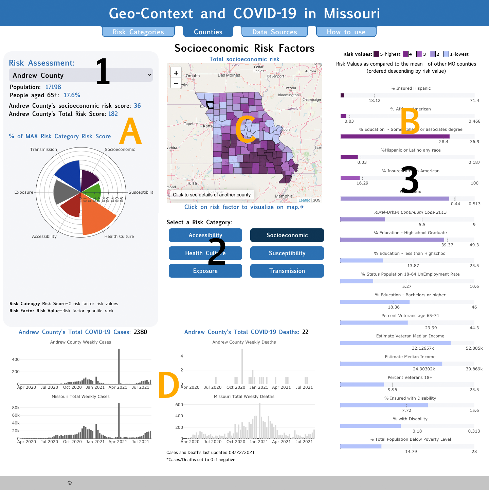

The “Counties” dashboard allows users to dive-in to different risk
categories and learn about the magnitude of risk factors in the
individual counties of Missouri.

How to navigate dashboard:
1) Select a county
2) Select a Risk Category
3) Click on Risk Factors to geo-spatially visualize
Features of dashboard:
A) A COVID-19 risk assessment of each county which includes a risk score per category (sum of all risk factor values) and a total risk score (sum of all risk category scores). The wind rose plot reports the proportion of each risk category as compared to the max value of all Missouri counties.
B) Risk factor bar plot that compares a county’s value to the average and max of all Missouri counties.
C) A risk factor choropleth map.
D) COVID-19 weekly Cases and Deaths (updated daily)